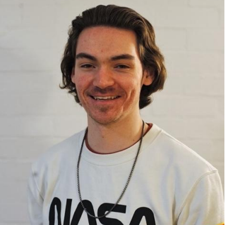

Hi, welcome to my Portfolio Website. My name is Alex and I’m a second year Msci Physics student at the University of Bristol.
The purpose of this site is to create a space where I can present myself open and honestly and highlight the qualities and attributes which I hope
make me a good physicist and engineer. Here I will attempt to document some of the projects I have completed, list my previous employment history
and most importantly impart a sense of who I am as a person, my motivations and work ethic.
Why Physics?
I am currently a second-year student studying Physics at the University of Bristol. The classic adage of wanting to do something for as long as you can remember comes to
mind when I think about how I got into physics. The truth is not always as simple though. My passion for Physics comes from a passion of understanding that I can say I
have had since a child, I recall always wanting to know more about things that seemed to bore other people, every question just lead to more questions. I eventually
found towards the end of my time at primary school that the most of my fundamental question were usually answered by the study of physics. Thus, since setting foot
in secondary school, I dedicated myself to the study of science with a particular interest in Physics. This road has ultimately lead me to where I am now and I can
say without a shadow of a doubt there is no place I would rather be!
My true passion developed from my time studying physics and has amalgamated into that of space flight and space technology.
I was first encapsulated with the idea of space when watching the first booster landing of the falcon 9 all the way back in 2015.
Since then it has been my dream to one day contribute to the production and development of space technologies and to help guide the
human race into that of a spacefaring civilization.